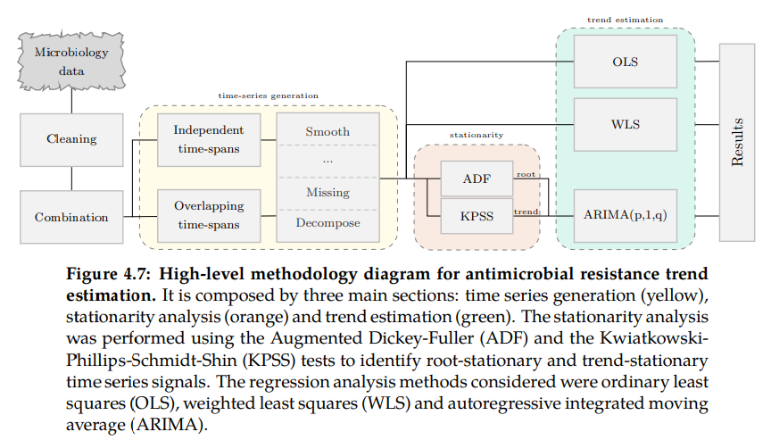
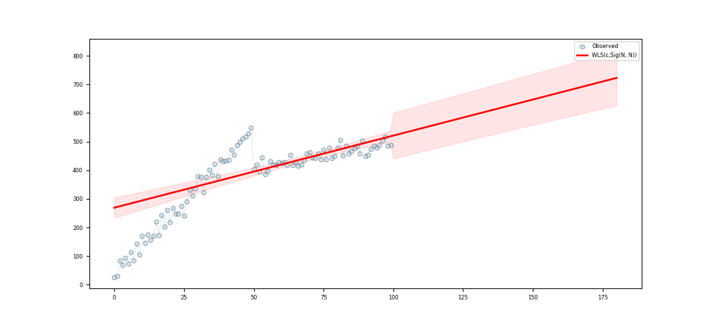
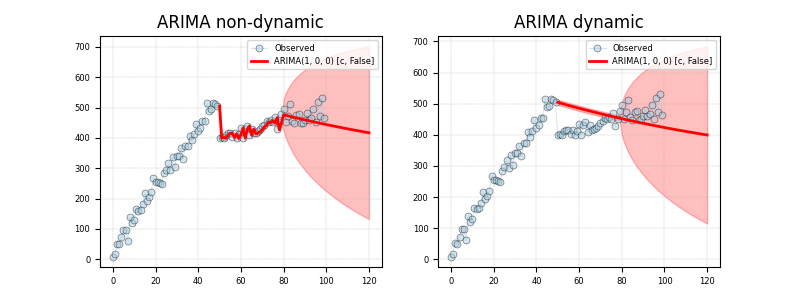

<!DOCTYPE html>
<html class="writer-html5" lang="en" >
<head>
  <meta charset="utf-8" /><meta name="viewport" content="width=device-width, initial-scale=1" />

  <meta name="viewport" content="width=device-width, initial-scale=1.0" />
  <title>Step 04 - TSA to estimate trends &mdash; pyamr 0.0.1 documentation</title>
      <link rel="stylesheet" href="../../../_static/pygments.css" type="text/css" />
      <link rel="stylesheet" href="../../../_static/css/theme.css" type="text/css" />
      <link rel="stylesheet" href="../../../_static/sg_gallery.css" type="text/css" />
      <link rel="stylesheet" href="../../../_static/sg_gallery-binder.css" type="text/css" />
      <link rel="stylesheet" href="../../../_static/sg_gallery-dataframe.css" type="text/css" />
      <link rel="stylesheet" href="../../../_static/sg_gallery-rendered-html.css" type="text/css" />
      <link rel="stylesheet" href="../../../_static/css/custom.css" type="text/css" />
    <link rel="shortcut icon" href="../../../_static/logo-pyamr-icon-v2.png"/>
  <!--[if lt IE 9]>
    <script src="../../../_static/js/html5shiv.min.js"></script>
  <![endif]-->
  
        <script src="../../../_static/jquery.js"></script>
        <script src="../../../_static/_sphinx_javascript_frameworks_compat.js"></script>
        <script data-url_root="../../../" id="documentation_options" src="../../../_static/documentation_options.js"></script>
        <script src="../../../_static/doctools.js"></script>
        <script src="../../../_static/sphinx_highlight.js"></script>
    <script src="../../../_static/js/theme.js"></script>
    <link rel="index" title="Index" href="../../../genindex.html" />
    <link rel="search" title="Search" href="../../../search.html" /> 
</head>

<body class="wy-body-for-nav"> 
  <div class="wy-grid-for-nav">
    <nav data-toggle="wy-nav-shift" class="wy-nav-side">
      <div class="wy-side-scroll">
        <div class="wy-side-nav-search" >

          
          
          <a href="../../../index.html" class="icon icon-home">
            pyamr
          </a>
<div role="search">
  <form id="rtd-search-form" class="wy-form" action="../../../search.html" method="get">
    <input type="text" name="q" placeholder="Search docs" aria-label="Search docs" />
    <input type="hidden" name="check_keywords" value="yes" />
    <input type="hidden" name="area" value="default" />
  </form>
</div>
        </div><div class="wy-menu wy-menu-vertical" data-spy="affix" role="navigation" aria-label="Navigation menu">
              <p class="caption" role="heading"><span class="caption-text">Tutorial</span></p>
<ul>
<li class="toctree-l1"><a class="reference internal" href="../../../usage/introduction.html">Introduction</a></li>
<li class="toctree-l1"><a class="reference internal" href="../../../usage/installation.html">Installation</a></li>
<li class="toctree-l1"><a class="reference internal" href="../../../usage/quickstart.html">Quickstart</a></li>
<li class="toctree-l1"><a class="reference internal" href="../../../usage/advanced.html">Advanced</a></li>
<li class="toctree-l1"><a class="reference internal" href="../../../usage/todo.html">Future Actions</a></li>
</ul>
<p class="caption" role="heading"><span class="caption-text">Example Galleries</span></p>
<ul>
<li class="toctree-l1"><a class="reference internal" href="../index.html">Tutorials</a></li>
<li class="toctree-l1"><a class="reference internal" href="../../indexes/index.html">Examples with indexes</a></li>
<li class="toctree-l1"><a class="reference internal" href="../../forecasting/index.html">Examples with TSA</a></li>
<li class="toctree-l1"><a class="reference internal" href="../../visualization/index.html">Visualization</a></li>
</ul>
<ul>
<li class="toctree-l1"><a class="reference internal" href="../../../api.html">API</a></li>
</ul>

        </div>
      </div>
    </nav>

    <section data-toggle="wy-nav-shift" class="wy-nav-content-wrap"><nav class="wy-nav-top" aria-label="Mobile navigation menu" >
          <i data-toggle="wy-nav-top" class="fa fa-bars"></i>
          <a href="../../../index.html">pyamr</a>
      </nav>

      <div class="wy-nav-content">
        <div class="rst-content">
          <div role="navigation" aria-label="Page navigation">
  <ul class="wy-breadcrumbs">
      <li><a href="../../../index.html" class="icon icon-home" aria-label="Home"></a></li>
      <li class="breadcrumb-item active">Step 04 - TSA to estimate trends</li>
      <li class="wy-breadcrumbs-aside">
            <a href="../../../_sources/_examples/tutorial/guide/plot_step_04.rst.txt" rel="nofollow"> View page source</a>
      </li>
  </ul>
  <hr/>
</div>
          <div role="main" class="document" itemscope="itemscope" itemtype="http://schema.org/Article">
           <div itemprop="articleBody">
             
  <div class="sphx-glr-download-link-note admonition note">
<p class="admonition-title">Note</p>
<p><a class="reference internal" href="#sphx-glr-download-examples-tutorial-guide-plot-step-04-py"><span class="std std-ref">Go to the end</span></a>
to download the full example code</p>
</div>
<section class="sphx-glr-example-title" id="step-04-tsa-to-estimate-trends">
<span id="sphx-glr-examples-tutorial-guide-plot-step-04-py"></span><h1>Step 04 - TSA to estimate trends<a class="headerlink" href="#step-04-tsa-to-estimate-trends" title="Permalink to this heading"></a></h1>
<div class="admonition warning">
<p class="admonition-title">Warning</p>
<p>Pending!</p>
</div>
<p>In this example, we will learn about important concepts such as time series
decomposition, autocorrelation, moving averages, and forecasting methods from
basic linear square models to more complex approaches such as ARIMA (AutoRegressive
Integrated Moving Average). We will also explore various statistical tools
commonly used for time series analysis, empowering you to harness the power of
time-dependent data and extract meaningful information from it. Get ready to embark
on a brief yet exciting journey into the world of time series analysis!</p>
<p>The diagram in Figure 4.7 describes the methodology suggested to estimate secular
trends in AMR from susceptibility test data. Since data corruption might occur in clinical
environments, those susceptibility test records wrongly reported (human or device errors)
or duplicated should be discarded. The remaining records are often divided into combinations
(tuples defined by sample type or specimen, pathogen and antimicrobial) for which a resistance
time series signal needs to be generated using either independent or overlapping time intervals
(see xxx). The time series were linearly interpolated to fill sporadic missing values. No
additional filters or preprocessing steps were applied. An analysis of stationarity around
a trend was carried out to identify interesting combinations and regression
analysis was used to quantify its tendency</p>
<a class="reference internal image-reference" href="../../../_images/sart-diagram.png"></a>
<div class="line-block">
<div class="line"><br /></div>
</div>
<p>The linear model (see Equation 4.3) has been selected to quantify resistance tendency
for several reasons: (i) the development of resistance in pathogens is an evolutionary
response to the selective pressure of antimicrobials, hence large variations in short
periods (e.g. consecutive days or months) are not expected (ii) the slope parameter can
be directly translated to change over time increasing its practicability and (iii) the
offset parameter is highly related with the overall resistance. Hence, the response variable
in regression analysis (resistance index) is described by the explanatory variable (time).
The slope (m) ranges within the interval [-1,1] where sign and absolute value capture
direction and rate of change respectively. The unit of the slope is represented by ∆y/∆x.</p>
<ul>
<li><p><strong>Least Squares Regression</strong></p>
<p>The optimization problem in ordinary least squares or <code class="docutils literal notranslate"><span class="pre">OLS</span></code> regression minimizes the least
square errors to find the best fitting model. Ordinary least squares - OLS - assumes
identical weights (wi) and independently distributed residuals with a normal distribution.
It is frequent to observe that some residuals might have higher variance than others,
meaning that those observations are effectively less certain. To contemplate such variability,
weighted linear squares or <code class="docutils literal notranslate"><span class="pre">WLS</span></code> regression (see Equation 4.4) applies a weighting
function to the residuals. The confidence of the computed resistance index (observed
variable) relies on the number of susceptibility test records manipulated. Hence, the
sigmoid function has been used to define weights proportional to the population size.</p>
<div class="admonition warning">
<p class="admonition-title">Warning</p>
<p>Include equation and/or external reference.</p>
</div>
</li>
<li><p><strong>Auto Regressive Integrated Moving Average</strong> or <code class="docutils literal notranslate"><span class="pre">ARIMA</span></code></p>
<p>An autoregressive integrated moving average (ARIMA) model is a generalization of an
autoregressive moving average (ARMA) model which can be also applied in scenarios
where data show evidence of non-stationarity. The autoregressive (AR) part expresses
the variable of interest (resistance index) as a function of past values of the variable.
The moving average (MA) indicates that the regression error is a linear combination of
error terms which occurred contemporaneously and at various times in the past. An
ARIMA(p,d,q) model is described by: p is the number of autoregressive terms,
d is the number of differences needed for stationarity and q is the
number of lagged forecast errors.</p>
<div class="admonition warning">
<p class="admonition-title">Warning</p>
<p>Include equation and/or external reference.</p>
</div>
<p>The interpretation of the parameter µ depends on the ARIMA model used for the
fitting. In order to estimate the linear trend, it was interesting to consider exclusively
MA models so that the expected value of µ was the mean of the one-time differenced
series; that is, the slope coefficient of the un-differenced series. The Bayesian information
criterion (BIC) was used to select the best ARIMA(0,1,q) model, being the one with the
lowest BIC the preferred.</p>
</li>
</ul>
<p>Lets load the libraries and create the time series.</p>
<div class="highlight-default notranslate"><div class="highlight"><pre><span></span><span class="linenos"> 88</span> <span class="c1"># Import</span>
<span class="linenos"> 89</span> <span class="kn">import</span> <span class="nn">pandas</span> <span class="k">as</span> <span class="nn">pd</span>
<span class="linenos"> 90</span>
<span class="linenos"> 91</span> <span class="c1"># Import class.</span>
<span class="linenos"> 92</span> <span class="kn">import</span> <span class="nn">sys</span>
<span class="linenos"> 93</span> <span class="kn">import</span> <span class="nn">warnings</span>
<span class="linenos"> 94</span> <span class="kn">import</span> <span class="nn">numpy</span> <span class="k">as</span> <span class="nn">np</span>
<span class="linenos"> 95</span> <span class="kn">import</span> <span class="nn">pandas</span> <span class="k">as</span> <span class="nn">pd</span>
<span class="linenos"> 96</span> <span class="kn">import</span> <span class="nn">matplotlib</span> <span class="k">as</span> <span class="nn">mpl</span>
<span class="linenos"> 97</span> <span class="kn">import</span> <span class="nn">matplotlib.pyplot</span> <span class="k">as</span> <span class="nn">plt</span>
<span class="linenos"> 98</span> <span class="kn">import</span> <span class="nn">statsmodels.api</span> <span class="k">as</span> <span class="nn">sm</span>
<span class="linenos"> 99</span> <span class="kn">import</span> <span class="nn">statsmodels.robust.norms</span> <span class="k">as</span> <span class="nn">norms</span>
<span class="linenos">100</span>
<span class="linenos">101</span> <span class="c1"># import weights.</span>
<span class="linenos">102</span> <span class="kn">from</span> <span class="nn">pyamr.datasets.load</span> <span class="kn">import</span> <span class="n">make_timeseries</span>
<span class="linenos">103</span>
<span class="linenos">104</span> <span class="c1"># Filter warnings</span>
<span class="linenos">105</span> <span class="n">warnings</span><span class="o">.</span><span class="n">simplefilter</span><span class="p">(</span><span class="n">action</span><span class="o">=</span><span class="s1">&#39;ignore&#39;</span><span class="p">,</span> <span class="n">category</span><span class="o">=</span><span class="ne">FutureWarning</span><span class="p">)</span>
<span class="linenos">106</span>
<span class="linenos">107</span> <span class="c1"># ----------------------------</span>
<span class="linenos">108</span> <span class="c1"># set basic configuration</span>
<span class="linenos">109</span> <span class="c1"># ----------------------------</span>
<span class="linenos">110</span> <span class="c1"># Matplotlib options</span>
<span class="linenos">111</span> <span class="n">mpl</span><span class="o">.</span><span class="n">rc</span><span class="p">(</span><span class="s1">&#39;legend&#39;</span><span class="p">,</span> <span class="n">fontsize</span><span class="o">=</span><span class="mi">6</span><span class="p">)</span>
<span class="linenos">112</span> <span class="n">mpl</span><span class="o">.</span><span class="n">rc</span><span class="p">(</span><span class="s1">&#39;xtick&#39;</span><span class="p">,</span> <span class="n">labelsize</span><span class="o">=</span><span class="mi">6</span><span class="p">)</span>
<span class="linenos">113</span> <span class="n">mpl</span><span class="o">.</span><span class="n">rc</span><span class="p">(</span><span class="s1">&#39;ytick&#39;</span><span class="p">,</span> <span class="n">labelsize</span><span class="o">=</span><span class="mi">6</span><span class="p">)</span>
<span class="linenos">114</span>
<span class="linenos">115</span> <span class="c1"># Set pandas configuration.</span>
<span class="linenos">116</span> <span class="n">pd</span><span class="o">.</span><span class="n">set_option</span><span class="p">(</span><span class="s1">&#39;display.max_colwidth&#39;</span><span class="p">,</span> <span class="mi">14</span><span class="p">)</span>
<span class="linenos">117</span> <span class="n">pd</span><span class="o">.</span><span class="n">set_option</span><span class="p">(</span><span class="s1">&#39;display.width&#39;</span><span class="p">,</span> <span class="mi">150</span><span class="p">)</span>
<span class="linenos">118</span> <span class="n">pd</span><span class="o">.</span><span class="n">set_option</span><span class="p">(</span><span class="s1">&#39;display.precision&#39;</span><span class="p">,</span> <span class="mi">4</span><span class="p">)</span>
<span class="linenos">119</span>
<span class="linenos">120</span> <span class="c1"># ----------------------------</span>
<span class="linenos">121</span> <span class="c1"># create data</span>
<span class="linenos">122</span> <span class="c1"># ----------------------------</span>
<span class="linenos">123</span> <span class="c1"># Create timeseries data</span>
<span class="linenos">124</span> <span class="n">x</span><span class="p">,</span> <span class="n">y</span><span class="p">,</span> <span class="n">f</span> <span class="o">=</span> <span class="n">make_timeseries</span><span class="p">()</span>
</pre></div>
</div>
<section id="example-using-wls">
<h2>Example using WLS<a class="headerlink" href="#example-using-wls" title="Permalink to this heading"></a></h2>
<p>Libraries</p>
<div class="highlight-default notranslate"><div class="highlight"><pre><span></span><span class="linenos">130</span> <span class="kn">from</span> <span class="nn">pyamr.core.regression.wls</span> <span class="kn">import</span> <span class="n">WLSWrapper</span>
<span class="linenos">131</span> <span class="kn">from</span> <span class="nn">pyamr.metrics.weights</span> <span class="kn">import</span> <span class="n">SigmoidA</span>
<span class="linenos">132</span>
<span class="linenos">133</span> <span class="c1"># Create method to compute weights from frequencies</span>
<span class="linenos">134</span> <span class="n">W</span> <span class="o">=</span> <span class="n">SigmoidA</span><span class="p">(</span><span class="n">r</span><span class="o">=</span><span class="mi">200</span><span class="p">,</span> <span class="n">g</span><span class="o">=</span><span class="mf">0.5</span><span class="p">,</span> <span class="n">offset</span><span class="o">=</span><span class="mf">0.0</span><span class="p">,</span> <span class="n">scale</span><span class="o">=</span><span class="mf">1.0</span><span class="p">)</span>
<span class="linenos">135</span>
<span class="linenos">136</span> <span class="c1"># Note that the function fit will call M.weights(weights) inside and will</span>
<span class="linenos">137</span> <span class="c1"># store the M converter in the instance. Therefore, the code execute is</span>
<span class="linenos">138</span> <span class="c1"># equivalent to &lt;weights=M.weights(f)&gt; with the only difference being that</span>
<span class="linenos">139</span> <span class="c1"># the weight converter is not saved.</span>
<span class="linenos">140</span> <span class="n">wls</span> <span class="o">=</span> <span class="n">WLSWrapper</span><span class="p">(</span><span class="n">estimator</span><span class="o">=</span><span class="n">sm</span><span class="o">.</span><span class="n">WLS</span><span class="p">)</span><span class="o">.</span><span class="n">fit</span><span class="p">(</span> \
<span class="linenos">141</span>     <span class="n">exog</span><span class="o">=</span><span class="n">x</span><span class="p">,</span> <span class="n">endog</span><span class="o">=</span><span class="n">y</span><span class="p">,</span> <span class="n">trend</span><span class="o">=</span><span class="s1">&#39;c&#39;</span><span class="p">,</span> <span class="n">weights</span><span class="o">=</span><span class="n">f</span><span class="p">,</span>
<span class="linenos">142</span>     <span class="n">W</span><span class="o">=</span><span class="n">W</span><span class="p">,</span> <span class="n">missing</span><span class="o">=</span><span class="s1">&#39;raise&#39;</span><span class="p">)</span>
</pre></div>
</div>
<div class="sphx-glr-script-out highlight-none notranslate"><div class="highlight"><pre><span></span>c:\users\kelda\desktop\repositories\virtualenvs\venv-py391-pyamr\lib\site-packages\statsmodels\regression\linear_model.py:807: RuntimeWarning:

divide by zero encountered in log
</pre></div>
</div>
<p>All information can be seen as a series</p>
<div class="highlight-default notranslate"><div class="highlight"><pre><span></span><span class="linenos">147</span> <span class="c1"># Print series.</span>
<span class="linenos">148</span> <span class="nb">print</span><span class="p">(</span><span class="s2">&quot;</span><span class="se">\n</span><span class="s2">Series:&quot;</span><span class="p">)</span>
<span class="linenos">149</span> <span class="nb">print</span><span class="p">(</span><span class="n">wls</span><span class="o">.</span><span class="n">as_series</span><span class="p">())</span>
</pre></div>
</div>
<div class="sphx-glr-script-out highlight-none notranslate"><div class="highlight"><pre><span></span>Series:
wls-rsquared                  0.5042
wls-rsquared_adj              0.4992
wls-fvalue                   99.6762
wls-fprob                        0.0
wls-aic                          inf
wls-bic                          inf
wls-llf                         -inf
wls-mse_model            153748.2628
wls-mse_resid              1542.4777
wls-mse_total              3079.9099
wls-const_coef              269.2284
wls-const_std                18.0069
wls-const_tvalue             14.9514
wls-const_tprob                  0.0
wls-const_cil               233.4942
wls-const_ciu               304.9625
wls-x1_coef                   2.5201
wls-x1_std                    0.2524
wls-x1_tvalue                 9.9838
wls-x1_tprob                     0.0
wls-x1_cil                    2.0192
wls-x1_ciu                    3.0211
wls-s_dw                       0.548
wls-s_jb_value                16.984
wls-s_jb_prob                 0.0002
wls-s_skew                     0.355
wls-s_kurtosis                  4.89
wls-s_omnibus_value            9.863
wls-s_omnibus_prob             0.007
wls-m_dw                      0.1566
wls-m_jb_value                7.0686
wls-m_jb_prob                 0.0292
wls-m_skew                   -0.6131
wls-m_kurtosis                3.4392
wls-m_nm_value                7.5327
wls-m_nm_prob                 0.0231
wls-m_ks_value                0.6094
wls-m_ks_prob                    0.0
wls-m_shp_value                0.939
wls-m_shp_prob                0.0002
wls-m_ad_value                2.7507
wls-m_ad_nnorm                 False
wls-missing                    raise
wls-exog               [[1.0, 0.0...
wls-endog              [26.961124...
wls-trend                          c
wls-weights            [0.0423348...
wls-W                  &lt;pyamr.met...
wls-model              &lt;statsmode...
wls-id                 WLS(c,Sig(...
dtype: object
</pre></div>
</div>
<p>Or a summary</p>
<div class="highlight-default notranslate"><div class="highlight"><pre><span></span><span class="linenos">154</span> <span class="c1"># Print summary.</span>
<span class="linenos">155</span> <span class="nb">print</span><span class="p">(</span><span class="s2">&quot;</span><span class="se">\n</span><span class="s2">Summary:&quot;</span><span class="p">)</span>
<span class="linenos">156</span> <span class="nb">print</span><span class="p">(</span><span class="n">wls</span><span class="o">.</span><span class="n">as_summary</span><span class="p">())</span>
</pre></div>
</div>
<div class="sphx-glr-script-out highlight-none notranslate"><div class="highlight"><pre><span></span>Summary:
                            WLS Regression Results
==============================================================================
Dep. Variable:                      y   R-squared:                       0.504
Model:                            WLS   Adj. R-squared:                  0.499
Method:                 Least Squares   F-statistic:                     99.68
Date:                Thu, 15 Jun 2023   Prob (F-statistic):           1.31e-16
Time:                        18:15:44   Log-Likelihood:                   -inf
No. Observations:                 100   AIC:                               inf
Df Residuals:                      98   BIC:                               inf
Df Model:                           1
Covariance Type:            nonrobust
==============================================================================
                 coef    std err          t      P&gt;|t|      [0.025      0.975]
------------------------------------------------------------------------------
const        269.2284     18.007     14.951      0.000     233.494     304.962
x1             2.5201      0.252      9.984      0.000       2.019       3.021
==============================================================================
Omnibus:                        9.863   Durbin-Watson:                   0.548
Prob(Omnibus):                  0.007   Jarque-Bera (JB):               16.984
Skew:                           0.355   Prob(JB):                     0.000205
Kurtosis:                       4.890   Cond. No.                         228.
Normal (N):                     7.533   Prob(N):                         0.023
==============================================================================
</pre></div>
</div>
<p>The regression line can be seen as</p>
<div class="highlight-default notranslate"><div class="highlight"><pre><span></span><span class="linenos">161</span> <span class="c1"># Print regression line.</span>
<span class="linenos">162</span> <span class="nb">print</span><span class="p">(</span><span class="s2">&quot;</span><span class="se">\n</span><span class="s2">Regression line:&quot;</span><span class="p">)</span>
<span class="linenos">163</span> <span class="nb">print</span><span class="p">(</span><span class="n">wls</span><span class="o">.</span><span class="n">line</span><span class="p">(</span><span class="n">np</span><span class="o">.</span><span class="n">arange</span><span class="p">(</span><span class="mi">10</span><span class="p">)))</span>
</pre></div>
</div>
<div class="sphx-glr-script-out highlight-none notranslate"><div class="highlight"><pre><span></span>Regression line:
[269.22835846 271.74850753 274.26865659 276.78880566 279.30895472
 281.82910379 284.34925285 286.86940192 289.38955098 291.90970005]
</pre></div>
</div>
<p>Let’s see how to make predictions using the wrapper and how
to plot the result in data. In addition, it compares the intervals
provided by <code class="docutils literal notranslate"><span class="pre">get_prediction</span></code> (confidence intervals) and the intervals
provided by <code class="docutils literal notranslate"><span class="pre">wls_prediction_std</span></code> (prediction intervals).</p>
<div class="highlight-default notranslate"><div class="highlight"><pre><span></span><span class="linenos">171</span> <span class="c1"># -----------------------------</span>
<span class="linenos">172</span> <span class="c1"># Predictions</span>
<span class="linenos">173</span> <span class="c1"># -----------------------------</span>
<span class="linenos">174</span> <span class="c1"># Variables.</span>
<span class="linenos">175</span> <span class="n">start</span><span class="p">,</span> <span class="n">end</span> <span class="o">=</span> <span class="kc">None</span><span class="p">,</span> <span class="mi">180</span>
<span class="linenos">176</span>
<span class="linenos">177</span> <span class="c1"># Compute predictions (exogenous?). It returns a 2D array</span>
<span class="linenos">178</span> <span class="c1"># where the rows contain the time (t), the mean, the lower</span>
<span class="linenos">179</span> <span class="c1"># and upper confidence (or prediction?) interval.</span>
<span class="linenos">180</span> <span class="n">preds</span> <span class="o">=</span> <span class="n">wls</span><span class="o">.</span><span class="n">get_prediction</span><span class="p">(</span><span class="n">start</span><span class="o">=</span><span class="n">start</span><span class="p">,</span> <span class="n">end</span><span class="o">=</span><span class="n">end</span><span class="p">)</span>
<span class="linenos">181</span>
<span class="linenos">182</span>
<span class="linenos">183</span> <span class="c1"># Create figure</span>
<span class="linenos">184</span> <span class="n">fig</span><span class="p">,</span> <span class="n">ax</span> <span class="o">=</span> <span class="n">plt</span><span class="o">.</span><span class="n">subplots</span><span class="p">(</span><span class="mi">1</span><span class="p">,</span> <span class="mi">1</span><span class="p">,</span> <span class="n">figsize</span><span class="o">=</span><span class="p">(</span><span class="mi">11</span><span class="p">,</span><span class="mi">5</span><span class="p">))</span>
<span class="linenos">185</span>
<span class="linenos">186</span> <span class="c1"># -----------------------------</span>
<span class="linenos">187</span> <span class="c1"># Plotting confidence intervals</span>
<span class="linenos">188</span> <span class="c1"># -----------------------------</span>
<span class="linenos">189</span> <span class="c1"># Plot truth values.</span>
<span class="linenos">190</span> <span class="n">ax</span><span class="o">.</span><span class="n">plot</span><span class="p">(</span><span class="n">x</span><span class="p">,</span> <span class="n">y</span><span class="p">,</span> <span class="n">color</span><span class="o">=</span><span class="s1">&#39;#A6CEE3&#39;</span><span class="p">,</span> <span class="n">alpha</span><span class="o">=</span><span class="mf">0.5</span><span class="p">,</span> <span class="n">marker</span><span class="o">=</span><span class="s1">&#39;o&#39;</span><span class="p">,</span>
<span class="linenos">191</span>            <span class="n">markeredgecolor</span><span class="o">=</span><span class="s1">&#39;k&#39;</span><span class="p">,</span> <span class="n">markeredgewidth</span><span class="o">=</span><span class="mf">0.5</span><span class="p">,</span>
<span class="linenos">192</span>            <span class="n">markersize</span><span class="o">=</span><span class="mi">5</span><span class="p">,</span> <span class="n">linewidth</span><span class="o">=</span><span class="mf">0.75</span><span class="p">,</span> <span class="n">label</span><span class="o">=</span><span class="s1">&#39;Observed&#39;</span><span class="p">)</span>
<span class="linenos">193</span>
<span class="linenos">194</span> <span class="c1"># Plot forecasted values.</span>
<span class="linenos">195</span> <span class="n">ax</span><span class="o">.</span><span class="n">plot</span><span class="p">(</span><span class="n">preds</span><span class="p">[</span><span class="mi">0</span><span class="p">,:],</span> <span class="n">preds</span><span class="p">[</span><span class="mi">1</span><span class="p">,</span> <span class="p">:],</span> <span class="n">color</span><span class="o">=</span><span class="s1">&#39;#FF0000&#39;</span><span class="p">,</span> <span class="n">alpha</span><span class="o">=</span><span class="mf">1.00</span><span class="p">,</span>
<span class="linenos">196</span>              <span class="n">linewidth</span><span class="o">=</span><span class="mf">2.0</span><span class="p">,</span> <span class="n">label</span><span class="o">=</span><span class="n">wls</span><span class="o">.</span><span class="n">_identifier</span><span class="p">(</span><span class="n">short</span><span class="o">=</span><span class="kc">True</span><span class="p">))</span>
<span class="linenos">197</span>
<span class="linenos">198</span> <span class="c1"># Plot the confidence intervals.</span>
<span class="linenos">199</span> <span class="n">ax</span><span class="o">.</span><span class="n">fill_between</span><span class="p">(</span><span class="n">preds</span><span class="p">[</span><span class="mi">0</span><span class="p">,</span> <span class="p">:],</span>
<span class="linenos">200</span>                 <span class="n">preds</span><span class="p">[</span><span class="mi">2</span><span class="p">,</span> <span class="p">:],</span>
<span class="linenos">201</span>                 <span class="n">preds</span><span class="p">[</span><span class="mi">3</span><span class="p">,</span> <span class="p">:],</span>
<span class="linenos">202</span>                 <span class="n">color</span><span class="o">=</span><span class="s1">&#39;r&#39;</span><span class="p">,</span>
<span class="linenos">203</span>                 <span class="n">alpha</span><span class="o">=</span><span class="mf">0.1</span><span class="p">)</span>
<span class="linenos">204</span>
<span class="linenos">205</span> <span class="c1"># Legend</span>
<span class="linenos">206</span> <span class="n">plt</span><span class="o">.</span><span class="n">legend</span><span class="p">()</span>
<span class="linenos">207</span>
<span class="linenos">208</span> <span class="c1"># Show</span>
<span class="linenos">209</span> <span class="n">plt</span><span class="o">.</span><span class="n">show</span><span class="p">()</span>
</pre></div>
</div>
</section>
<section id="example-using-arima">
<h2>Example using ARIMA<a class="headerlink" href="#example-using-arima" title="Permalink to this heading"></a></h2>
<div class="admonition note">
<p class="admonition-title">Note</p>
<p>Since we are using arima, we should have checked for stationarity!</p>
</div>
<div class="highlight-default notranslate"><div class="highlight"><pre><span></span><span class="linenos">220</span> <span class="c1"># Libraries</span>
<span class="linenos">221</span> <span class="c1"># Import ARIMA from statsmodels.</span>
<span class="linenos">222</span> <span class="kn">from</span> <span class="nn">statsmodels.tsa.arima.model</span> <span class="kn">import</span> <span class="n">ARIMA</span>
<span class="linenos">223</span> <span class="c1"># Import ARIMA wrapper from pyamr.</span>
<span class="linenos">224</span> <span class="kn">from</span> <span class="nn">pyamr.core.regression.arima</span> <span class="kn">import</span> <span class="n">ARIMAWrapper</span>
<span class="linenos">225</span>
<span class="linenos">226</span> <span class="c1"># ----------------------------</span>
<span class="linenos">227</span> <span class="c1"># create data</span>
<span class="linenos">228</span> <span class="c1"># ----------------------------</span>
<span class="linenos">229</span> <span class="c1"># Create timeseries data</span>
<span class="linenos">230</span> <span class="n">x</span><span class="p">,</span> <span class="n">y</span><span class="p">,</span> <span class="n">f</span> <span class="o">=</span> <span class="n">make_timeseries</span><span class="p">()</span>
<span class="linenos">231</span>
<span class="linenos">232</span> <span class="c1"># Create exogenous variable</span>
<span class="linenos">233</span> <span class="n">exog</span> <span class="o">=</span> <span class="n">x</span>
<span class="linenos">234</span>
<span class="linenos">235</span> <span class="c1"># ----------------------------</span>
<span class="linenos">236</span> <span class="c1"># fit the model</span>
<span class="linenos">237</span> <span class="c1"># ----------------------------</span>
<span class="linenos">238</span> <span class="c1"># Create specific arima model.</span>
<span class="linenos">239</span> <span class="n">arima</span> <span class="o">=</span> <span class="n">ARIMAWrapper</span><span class="p">(</span><span class="n">estimator</span><span class="o">=</span><span class="n">ARIMA</span><span class="p">)</span><span class="o">.</span><span class="n">fit</span><span class="p">(</span> \
<span class="linenos">240</span>  <span class="n">endog</span><span class="o">=</span><span class="n">y</span><span class="p">[:</span><span class="mi">80</span><span class="p">],</span> <span class="n">order</span><span class="o">=</span><span class="p">(</span><span class="mi">1</span><span class="p">,</span><span class="mi">0</span><span class="p">,</span><span class="mi">0</span><span class="p">),</span> <span class="n">trend</span><span class="o">=</span><span class="s1">&#39;c&#39;</span><span class="p">,</span> <span class="n">disp</span><span class="o">=</span><span class="mi">0</span><span class="p">)</span>
</pre></div>
</div>
<p>All information can be seen as a series</p>
<div class="highlight-default notranslate"><div class="highlight"><pre><span></span><span class="linenos">245</span> <span class="c1"># Print series</span>
<span class="linenos">246</span> <span class="nb">print</span><span class="p">(</span><span class="s2">&quot;</span><span class="se">\n</span><span class="s2">Series:&quot;</span><span class="p">)</span>
<span class="linenos">247</span> <span class="nb">print</span><span class="p">(</span><span class="n">arima</span><span class="o">.</span><span class="n">as_series</span><span class="p">())</span>
</pre></div>
</div>
<div class="sphx-glr-script-out highlight-none notranslate"><div class="highlight"><pre><span></span>Series:
arima-aic                    761.509
arima-bic                   768.6551
arima-hqic                  764.3741
arima-llf                  -377.7545
arima-const_coef            266.5951
arima-const_std              165.575
arima-const_tvalue            1.6101
arima-const_tprob             0.1074
arima-const_cil             -57.9259
arima-const_ciu             591.1161
arima-ar.L1_coef              0.9917
arima-ar.L1_std                0.019
arima-ar.L1_tvalue           52.1312
arima-ar.L1_tprob                0.0
arima-ar.L1_cil               0.9544
arima-ar.L1_ciu                1.029
arima-sigma2_coef           702.5324
arima-sigma2_std              92.619
arima-sigma2_tvalue           7.5852
arima-sigma2_tprob               0.0
arima-sigma2_cil            521.0025
arima-sigma2_ciu            884.0623
arima-m_dw                     1.735
arima-m_jb_value           2049.8936
arima-m_jb_prob                  0.0
arima-m_skew                 -3.8991
arima-m_kurtosis             26.5405
arima-m_nm_value            101.5915
arima-m_nm_prob                  0.0
arima-m_ks_value               0.588
arima-m_ks_prob                  0.0
arima-m_shp_value             0.6822
arima-m_shp_prob                 0.0
arima-m_ad_value              4.6133
arima-m_ad_nnorm               False
arima-converged                 True
arima-endog            [9.1093314...
arima-order                (1, 0, 0)
arima-trend                        c
arima-disp                         0
arima-model            &lt;statsmode...
arima-id               ARIMA(1, 0...
dtype: object
</pre></div>
</div>
<p>Or a summary</p>
<div class="highlight-default notranslate"><div class="highlight"><pre><span></span><span class="linenos">252</span> <span class="c1"># Print summary.</span>
<span class="linenos">253</span> <span class="nb">print</span><span class="p">(</span><span class="s2">&quot;</span><span class="se">\n</span><span class="s2">Summary:&quot;</span><span class="p">)</span>
<span class="linenos">254</span> <span class="nb">print</span><span class="p">(</span><span class="n">arima</span><span class="o">.</span><span class="n">as_summary</span><span class="p">())</span>
</pre></div>
</div>
<div class="sphx-glr-script-out highlight-none notranslate"><div class="highlight"><pre><span></span>Summary:
                               SARIMAX Results
==============================================================================
Dep. Variable:                      y   No. Observations:                   80
Model:                 ARIMA(1, 0, 0)   Log Likelihood                -377.754
Date:                Thu, 15 Jun 2023   AIC                            761.509
Time:                        18:15:44   BIC                            768.655
Sample:                             0   HQIC                           764.374
                                 - 80
Covariance Type:                  opg
==============================================================================
                 coef    std err          z      P&gt;|z|      [0.025      0.975]
------------------------------------------------------------------------------
const        266.5951    165.575      1.610      0.107     -57.926     591.116
ar.L1          0.9917      0.019     52.131      0.000       0.954       1.029
sigma2       702.5324     92.619      7.585      0.000     521.002     884.062
==============================================================================
                                    Manual
------------------------------------------------------------------------------
Omnibus:                        0.000  Durbin-Watson:                    1.735
Prob(Omnibus):                  0.000  Jarque-Bera (JB):              2049.894
Skew:                          -3.899  Prob(JB):                         0.000
Kurtosis_m:                    26.541  Cond No:
Normal (N):                   101.591  Prob(N):                          0.000
==============================================================================
</pre></div>
</div>
<p>Lets see how to make predictions using the wrapper which has been previously
fitted. It also demonstrates how to plot the resulting data for visualization
purposes. It shows two different types of predictions: (i) <strong>dynamic predictions</strong>
in which the prediction is done based on the previously predicted values. Note
that for the case of ARIMA(0,1,1) it returns a line and (ii) <strong>not dynamic</strong> in
which the prediction is done based on the real values of the time series, no
matter what the prediction was for those values.</p>
<div class="highlight-default notranslate"><div class="highlight"><pre><span></span><span class="linenos">265</span> <span class="c1"># ----------------</span>
<span class="linenos">266</span> <span class="c1"># Predictions</span>
<span class="linenos">267</span> <span class="c1"># ----------------</span>
<span class="linenos">268</span> <span class="c1"># Variables.</span>
<span class="linenos">269</span> <span class="n">s</span><span class="p">,</span> <span class="n">e</span> <span class="o">=</span> <span class="mi">50</span><span class="p">,</span> <span class="mi">120</span>
<span class="linenos">270</span>
<span class="linenos">271</span> <span class="c1"># Compute predictions</span>
<span class="linenos">272</span> <span class="n">preds_1</span> <span class="o">=</span> <span class="n">arima</span><span class="o">.</span><span class="n">get_prediction</span><span class="p">(</span><span class="n">start</span><span class="o">=</span><span class="n">s</span><span class="p">,</span> <span class="n">end</span><span class="o">=</span><span class="n">e</span><span class="p">,</span> <span class="n">dynamic</span><span class="o">=</span><span class="kc">False</span><span class="p">)</span>
<span class="linenos">273</span> <span class="n">preds_2</span> <span class="o">=</span> <span class="n">arima</span><span class="o">.</span><span class="n">get_prediction</span><span class="p">(</span><span class="n">start</span><span class="o">=</span><span class="n">s</span><span class="p">,</span> <span class="n">end</span><span class="o">=</span><span class="n">e</span><span class="p">,</span> <span class="n">dynamic</span><span class="o">=</span><span class="kc">True</span><span class="p">)</span>
<span class="linenos">274</span>
<span class="linenos">275</span> <span class="c1"># Create figure</span>
<span class="linenos">276</span> <span class="n">fig</span><span class="p">,</span> <span class="n">axes</span> <span class="o">=</span> <span class="n">plt</span><span class="o">.</span><span class="n">subplots</span><span class="p">(</span><span class="mi">1</span><span class="p">,</span> <span class="mi">2</span><span class="p">,</span> <span class="n">figsize</span><span class="o">=</span><span class="p">(</span><span class="mi">8</span><span class="p">,</span> <span class="mi">3</span><span class="p">))</span>
<span class="linenos">277</span>
<span class="linenos">278</span> <span class="c1"># ----------------</span>
<span class="linenos">279</span> <span class="c1"># Plot non-dynamic</span>
<span class="linenos">280</span> <span class="c1"># ----------------</span>
<span class="linenos">281</span> <span class="c1"># Plot truth values.</span>
<span class="linenos">282</span> <span class="n">axes</span><span class="p">[</span><span class="mi">0</span><span class="p">]</span><span class="o">.</span><span class="n">plot</span><span class="p">(</span><span class="n">y</span><span class="p">,</span> <span class="n">color</span><span class="o">=</span><span class="s1">&#39;#A6CEE3&#39;</span><span class="p">,</span> <span class="n">alpha</span><span class="o">=</span><span class="mf">0.5</span><span class="p">,</span> <span class="n">marker</span><span class="o">=</span><span class="s1">&#39;o&#39;</span><span class="p">,</span>
<span class="linenos">283</span>              <span class="n">markeredgecolor</span><span class="o">=</span><span class="s1">&#39;k&#39;</span><span class="p">,</span> <span class="n">markeredgewidth</span><span class="o">=</span><span class="mf">0.5</span><span class="p">,</span>
<span class="linenos">284</span>              <span class="n">markersize</span><span class="o">=</span><span class="mi">5</span><span class="p">,</span> <span class="n">linewidth</span><span class="o">=</span><span class="mf">0.75</span><span class="p">,</span> <span class="n">label</span><span class="o">=</span><span class="s1">&#39;Observed&#39;</span><span class="p">)</span>
<span class="linenos">285</span>
<span class="linenos">286</span> <span class="c1"># Plot forecasted values.</span>
<span class="linenos">287</span> <span class="n">axes</span><span class="p">[</span><span class="mi">0</span><span class="p">]</span><span class="o">.</span><span class="n">plot</span><span class="p">(</span><span class="n">preds_1</span><span class="p">[</span><span class="mi">0</span><span class="p">,</span> <span class="p">:],</span> <span class="n">preds_1</span><span class="p">[</span><span class="mi">1</span><span class="p">,</span> <span class="p">:],</span> <span class="n">color</span><span class="o">=</span><span class="s1">&#39;#FF0000&#39;</span><span class="p">,</span> <span class="n">alpha</span><span class="o">=</span><span class="mf">1.00</span><span class="p">,</span>
<span class="linenos">288</span>              <span class="n">linewidth</span><span class="o">=</span><span class="mf">2.0</span><span class="p">,</span> <span class="n">label</span><span class="o">=</span><span class="n">arima</span><span class="o">.</span><span class="n">_identifier</span><span class="p">())</span>
<span class="linenos">289</span>
<span class="linenos">290</span> <span class="c1"># Plot the confidence intervals.</span>
<span class="linenos">291</span> <span class="n">axes</span><span class="p">[</span><span class="mi">0</span><span class="p">]</span><span class="o">.</span><span class="n">fill_between</span><span class="p">(</span><span class="n">preds_1</span><span class="p">[</span><span class="mi">0</span><span class="p">,</span> <span class="p">:],</span> <span class="n">preds_1</span><span class="p">[</span><span class="mi">2</span><span class="p">,</span> <span class="p">:],</span>
<span class="linenos">292</span>                      <span class="n">preds_1</span><span class="p">[</span><span class="mi">3</span><span class="p">,</span> <span class="p">:],</span>
<span class="linenos">293</span>                      <span class="n">color</span><span class="o">=</span><span class="s1">&#39;#FF0000&#39;</span><span class="p">,</span>
<span class="linenos">294</span>                      <span class="n">alpha</span><span class="o">=</span><span class="mf">0.25</span><span class="p">)</span>
<span class="linenos">295</span>
<span class="linenos">296</span> <span class="c1"># ------------</span>
<span class="linenos">297</span> <span class="c1"># Plot dynamic</span>
<span class="linenos">298</span> <span class="c1"># ------------</span>
<span class="linenos">299</span> <span class="c1"># Plot truth values.</span>
<span class="linenos">300</span> <span class="n">axes</span><span class="p">[</span><span class="mi">1</span><span class="p">]</span><span class="o">.</span><span class="n">plot</span><span class="p">(</span><span class="n">y</span><span class="p">,</span> <span class="n">color</span><span class="o">=</span><span class="s1">&#39;#A6CEE3&#39;</span><span class="p">,</span> <span class="n">alpha</span><span class="o">=</span><span class="mf">0.5</span><span class="p">,</span> <span class="n">marker</span><span class="o">=</span><span class="s1">&#39;o&#39;</span><span class="p">,</span>
<span class="linenos">301</span>              <span class="n">markeredgecolor</span><span class="o">=</span><span class="s1">&#39;k&#39;</span><span class="p">,</span> <span class="n">markeredgewidth</span><span class="o">=</span><span class="mf">0.5</span><span class="p">,</span>
<span class="linenos">302</span>              <span class="n">markersize</span><span class="o">=</span><span class="mi">5</span><span class="p">,</span> <span class="n">linewidth</span><span class="o">=</span><span class="mf">0.75</span><span class="p">,</span> <span class="n">label</span><span class="o">=</span><span class="s1">&#39;Observed&#39;</span><span class="p">)</span>
<span class="linenos">303</span>
<span class="linenos">304</span> <span class="c1"># Plot forecasted values.</span>
<span class="linenos">305</span> <span class="n">axes</span><span class="p">[</span><span class="mi">1</span><span class="p">]</span><span class="o">.</span><span class="n">plot</span><span class="p">(</span><span class="n">preds_2</span><span class="p">[</span><span class="mi">0</span><span class="p">,</span> <span class="p">:],</span> <span class="n">preds_2</span><span class="p">[</span><span class="mi">1</span><span class="p">,</span> <span class="p">:],</span> <span class="n">color</span><span class="o">=</span><span class="s1">&#39;#FF0000&#39;</span><span class="p">,</span> <span class="n">alpha</span><span class="o">=</span><span class="mf">1.00</span><span class="p">,</span>
<span class="linenos">306</span>              <span class="n">linewidth</span><span class="o">=</span><span class="mf">2.0</span><span class="p">,</span> <span class="n">label</span><span class="o">=</span><span class="n">arima</span><span class="o">.</span><span class="n">_identifier</span><span class="p">())</span>
<span class="linenos">307</span>
<span class="linenos">308</span> <span class="c1"># Plot the confidence intervals.</span>
<span class="linenos">309</span> <span class="n">axes</span><span class="p">[</span><span class="mi">1</span><span class="p">]</span><span class="o">.</span><span class="n">fill_between</span><span class="p">(</span><span class="n">preds_2</span><span class="p">[</span><span class="mi">0</span><span class="p">,</span> <span class="p">:],</span> <span class="n">preds_2</span><span class="p">[</span><span class="mi">2</span><span class="p">,</span> <span class="p">:],</span>
<span class="linenos">310</span>                      <span class="n">preds_2</span><span class="p">[</span><span class="mi">3</span><span class="p">,</span> <span class="p">:],</span>
<span class="linenos">311</span>                      <span class="n">color</span><span class="o">=</span><span class="s1">&#39;#FF0000&#39;</span><span class="p">,</span>
<span class="linenos">312</span>                      <span class="n">alpha</span><span class="o">=</span><span class="mf">0.25</span><span class="p">)</span>
<span class="linenos">313</span>
<span class="linenos">314</span> <span class="c1"># Configure axes</span>
<span class="linenos">315</span> <span class="n">axes</span><span class="p">[</span><span class="mi">0</span><span class="p">]</span><span class="o">.</span><span class="n">set_title</span><span class="p">(</span><span class="s2">&quot;ARIMA non-dynamic&quot;</span><span class="p">)</span>
<span class="linenos">316</span> <span class="n">axes</span><span class="p">[</span><span class="mi">1</span><span class="p">]</span><span class="o">.</span><span class="n">set_title</span><span class="p">(</span><span class="s2">&quot;ARIMA dynamic&quot;</span><span class="p">)</span>
<span class="linenos">317</span>
<span class="linenos">318</span> <span class="c1"># Format axes</span>
<span class="linenos">319</span> <span class="n">axes</span><span class="p">[</span><span class="mi">0</span><span class="p">]</span><span class="o">.</span><span class="n">grid</span><span class="p">(</span><span class="kc">True</span><span class="p">,</span> <span class="n">linestyle</span><span class="o">=</span><span class="s1">&#39;--&#39;</span><span class="p">,</span> <span class="n">linewidth</span><span class="o">=</span><span class="mf">0.25</span><span class="p">)</span>
<span class="linenos">320</span> <span class="n">axes</span><span class="p">[</span><span class="mi">1</span><span class="p">]</span><span class="o">.</span><span class="n">grid</span><span class="p">(</span><span class="kc">True</span><span class="p">,</span> <span class="n">linestyle</span><span class="o">=</span><span class="s1">&#39;--&#39;</span><span class="p">,</span> <span class="n">linewidth</span><span class="o">=</span><span class="mf">0.25</span><span class="p">)</span>
<span class="linenos">321</span>
<span class="linenos">322</span> <span class="c1"># Legend</span>
<span class="linenos">323</span> <span class="n">axes</span><span class="p">[</span><span class="mi">0</span><span class="p">]</span><span class="o">.</span><span class="n">legend</span><span class="p">()</span>
<span class="linenos">324</span> <span class="n">axes</span><span class="p">[</span><span class="mi">1</span><span class="p">]</span><span class="o">.</span><span class="n">legend</span><span class="p">()</span>
<span class="linenos">325</span>
<span class="linenos">326</span> <span class="c1"># Show</span>
<span class="linenos">327</span> <span class="n">plt</span><span class="o">.</span><span class="n">show</span><span class="p">()</span>
</pre></div>
</div>
<p class="sphx-glr-timing"><strong>Total running time of the script:</strong> ( 0 minutes  0.301 seconds)</p>
<div class="sphx-glr-footer sphx-glr-footer-example docutils container" id="sphx-glr-download-examples-tutorial-guide-plot-step-04-py">
<div class="sphx-glr-download sphx-glr-download-python docutils container">
<p><a class="reference download internal" download="" href="../../../_downloads/043e29a397954fb60ba60e44ded380bc/plot_step_04.py"><code class="xref download docutils literal notranslate"><span class="pre">Download</span> <span class="pre">Python</span> <span class="pre">source</span> <span class="pre">code:</span> <span class="pre">plot_step_04.py</span></code></a></p>
</div>
<div class="sphx-glr-download sphx-glr-download-jupyter docutils container">
<p><a class="reference download internal" download="" href="../../../_downloads/31ac67b748492807d3fceabf652ec62a/plot_step_04.ipynb"><code class="xref download docutils literal notranslate"><span class="pre">Download</span> <span class="pre">Jupyter</span> <span class="pre">notebook:</span> <span class="pre">plot_step_04.ipynb</span></code></a></p>
</div>
</div>
<p class="sphx-glr-signature"><a class="reference external" href="https://sphinx-gallery.github.io">Gallery generated by Sphinx-Gallery</a></p>
</section>
</section>


           </div>
          </div>
          <footer>

  <hr/>

  <div role="contentinfo">
    <p>&#169; Copyright 2021-2023, Bernard Hernandez.</p>
  </div>

  Built with <a href="https://www.sphinx-doc.org/">Sphinx</a> using a
    <a href="https://github.com/readthedocs/sphinx_rtd_theme">theme</a>
    provided by <a href="https://readthedocs.org">Read the Docs</a>.
   

</footer>
        </div>
      </div>
    </section>
  </div>
  <script>
      jQuery(function () {
          SphinxRtdTheme.Navigation.enable(true);
      });
  </script> 

</body>
</html>